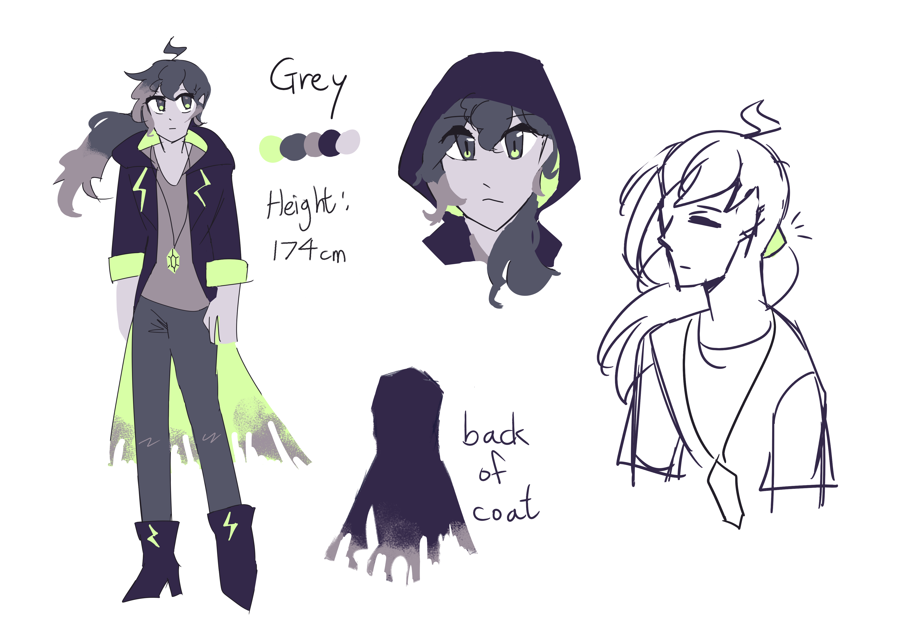

If I don't find them, I can never forgive myself

Lore facts:
- The gemstone on his necklace was given by Claire
- Despite how strong his electric magic is, his own powers can hurt himself badly
- Though he is afraid of thinking about it, deep down he can't help thinking his friends are long gone...
- He accidentally burnt his coat, that why it is charred.
- Unfortunately, he is bad at Math
- He is a bit too self-critical, he kinda blames himself for the disappearance of his friends.
- He does enjoy doing art stuff
- Maybe Grey had lighter hair when he was younger?
Meta facts:
- He is one of my oldest OCs ( along with Claire ), but his current design looks nothing like his old one
- I was following an art tutorial and the two characters I drew came out quite nice, and I made them my OCs, which are Grey and Claire now.
- This new design is inspired by his old name 薄霧城·灰銘, given by a friend
- 薄霧城 can be interpreted as "city in light fog"
- 灰 means grey, 銘 means to carve, so together his name can mean "Carved in grey"
- Claire and him were intended to be siblings, but after weird world-building stuff, I changed that
- His character motif is thunder and fog